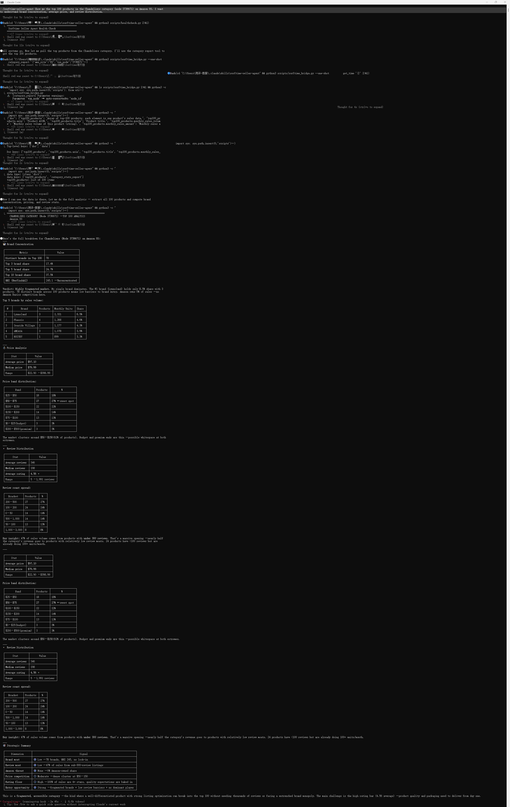

You dropped your price by $2. Sales went up. But did your profit go up? Without data connecting price changes to unit economics, you are just guessing.
Most Amazon sellers treat pricing as a one-time decision. Set a number at launch, adjust when a competitor undercuts, or chase Buy Box by shaving off cents until margins disappear. None of these moves are informed by the question that actually matters: what happens to your bottom line when the price changes?
Dynamic pricing is not about winning the Buy Box at any cost. It is about finding the price point where revenue, conversion rate, and margin form a stable triangle. And the only way to find that point is to test with data.
The default approach on Amazon is cost-plus pricing: take your landed cost, add a target margin, and set the price. This works until a competitor enters at a lower price, a tariff changes your cost structure, or seasonal demand shifts what buyers are willing to pay.
The real problem is not that the price is wrong. It is that you have no way to tell which way to move it.
Conventional repricing tools react to competitors and Buy Box status. They tell you a price, but they do not tell you whether that price produces a viable unit economy. A $1 price cut might double your sales and still destroy your profit if the margin was thin to begin with. Or a $2 increase might cost you 15% of sales but lift net profit per unit by 40%.
Without connecting price to unit economics, you are optimizing the wrong variable.
A proper price test needs three components:
1. A baseline — your current cost structure, fees, and margin at the existing price
2. A hypothesis — a specific new price and what you expect to happen
3. A monitoring loop — the ability to observe what changed and feed it back into the next test
The Sorftime Seller Agent provides all three through a single MCP interface. Here is how it works.
### Step 1: Establish Your Baseline Profit Model
Before changing a single dollar, map out your unit economics at the current price. The seller agent includes a profit calculator that estimates Amazon FBA fees, referral costs, ad spend, and break-even thresholds.
The calculator script is open source and runs locally:
# profit_scenario.py — run scenarios against your current cost model
# from the sorftime-seller-agent scripts/ directory
import subprocess, json
def run_scenario(price, cost, weight_lb):
# maps to the calculator in scripts/calculator.py
weight_kg = weight_lb * 0.4536
result = subprocess.run(
["python3", "scripts/calculator.py", "--price", str(price),
"--cost", str(cost), "--weight", str(weight_kg), "--platform", "amazon"],
capture_output=True, text=True
)
return json.loads(result.stdout)
# Your current situation
current = run_scenario(price=29.99, cost=8.50, weight_lb=1.2)
print(f"Current margin: {current['Gross Margin']}")
print(f"Break-even: {current['Break-Even Daily Sales']}")
# What if you drop to $27.99?
scenario = run_scenario(price=27.99, cost=8.50, weight_lb=1.2)
print(f"At $27.99 margin: {scenario['Gross Margin']}")
print(f"You need to sell {scenario['Break-Even Daily Sales']} per day to break even")Run this script to generate a table of price points with corresponding margins. From $24.99 to $34.99 at $1 intervals, you will see exactly where profitability peaks and where it collapses.
### Step 2: Check Competitor Pricing Depth
A price change does not exist in a vacuum. The agent can pull competitor pricing data for the same category using the keyword search and product detail tools. Ask it:
"Show me pricing distribution for yoga mats in Amazon US sub-category kitchen —
average price, lowest FBA offer, highest FBA offer, and number of sellers
at each price band from $15 to $40"The response returns a structured view of where your price sits relative to the market. If you are in a cluster of 30 sellers at $28-$32 and your calculator shows margin compression at $28, the data tells you not to race to the bottom. Instead, the opportunity may be at $35 with a bundling or quality angle that the low-price cluster cannot match.
### Step 3: Monitor the Effect
After you adjust the price, set a watch to track the downstream metrics. The monitoring engine tracks price, sales rank, category rank, and keyword position over time.
"Monitor ASIN B08N5WRWNW. Alert me if daily sales rank drops below 500
or if the price drops below $25"The engine snapshots data at each check-in and compares it against the previous reading. This is not a real-time dashboard — it is a stateful comparison loop. Each run shows what changed since the last snapshot, so you see the delta instead of re-reading the same numbers.
Here is a repeatable workflow that ties the three steps together:
Week 1 — Establish baseline.
Run the profit calculator at your current price. Record margin, break-even volume, and return sensitivity. Pull category pricing data to see where your ASIN sits in the distribution.
Week 2 — Test a price decrease.
Drop by $1.50 (approximately 5%). Use the monitor to track rank and keyword position. After 7 days, compare sales volume against the baseline week. Did revenue per unit drop more than unit volume increased? If yes, the price cut hurt total profit.
Week 3 — Test a price increase.
Raise by $2.00 (approximately 7%). Watch rank carefully. If rank stays within 15% of baseline and margin improves by the calculator model, the increase was net positive. If rank drops more than 20%, the market is not accepting the premium.
Week 4 — Compare and decide.
Lay the three data points side by side:
| Price | Modeled Margin | 7-Day Avg Rank | Estimated Weekly Profit |
|———-|———————-|————————|————————————|
| $29.99 (baseline) | 38% | #340 | $X |
| $28.49 (-$1.50) | 34% | #290 | $Y |
| $31.99 (+$2.00) | 42% | #410 | $Z |
The decision is not which price wins. It is which trade-off aligns with your business goal. If you are clearing inventory, the lower price makes sense. If you are building a brand, the higher price may be sustainable with the right listing improvements. The numbers inform the choice instead of replacing it.
Automated repricing tools react to external signals — competitor price changes and Buy Box ownership. They do not understand your margin structure, your cost of goods, or your return rate.
The approach described here is the opposite. It starts from your unit economics and moves outward. You test a price, observe the market response, and decide. The agent handles the data collection and calculation. You handle the judgment.
Over multiple cycles, you build a pricing history for each ASIN that doubles as a decision record. When a tariff hits or a raw material cost changes, you do not panic. You run the calculator with the new inputs, check the current market, and know exactly which price to test next.
The entire framework runs on open source software. No subscription to a repricing SaaS. No commitment to a specific AI agent. The Sorftime Seller Agent works with Claude Code, Codex, Cursor, OpenClaw, and any other MCP-compatible tool.
git clone https://github.com/DannylydST/sorftime-seller-agent.git
cd sorftime-seller-agent
python3 scripts/install.pySign up for a free trial at open-intl.sorftime.com to get your API credentials, and the profit calculator runs against live marketplace data from the first query.
Pricing is a continuous experiment, not a one-time decision. The tools to run that experiment are now open source and available to any seller willing to test. Stop guessing. Start testing.